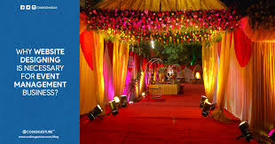

Blooms:Event Managment
contact details:25364118
place:banglore

place:banglore
Event Managnemt
The event management is the dream business of mine.
The event management is done by the Event management team.
The event management team is the team which is very hardworking and dedicated.